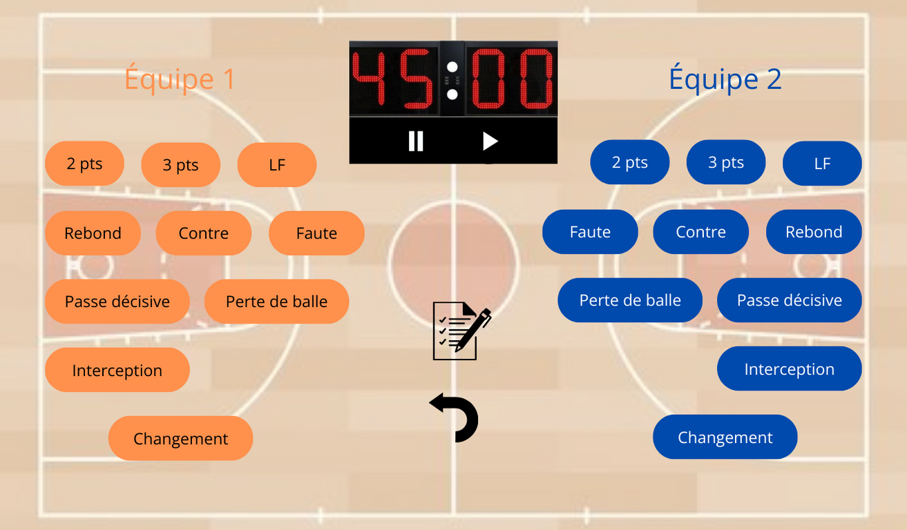
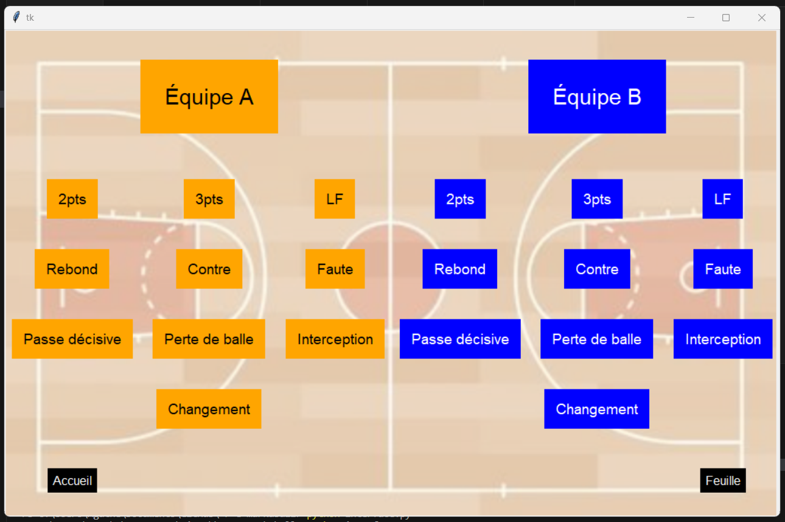
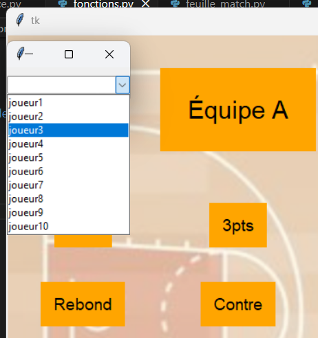
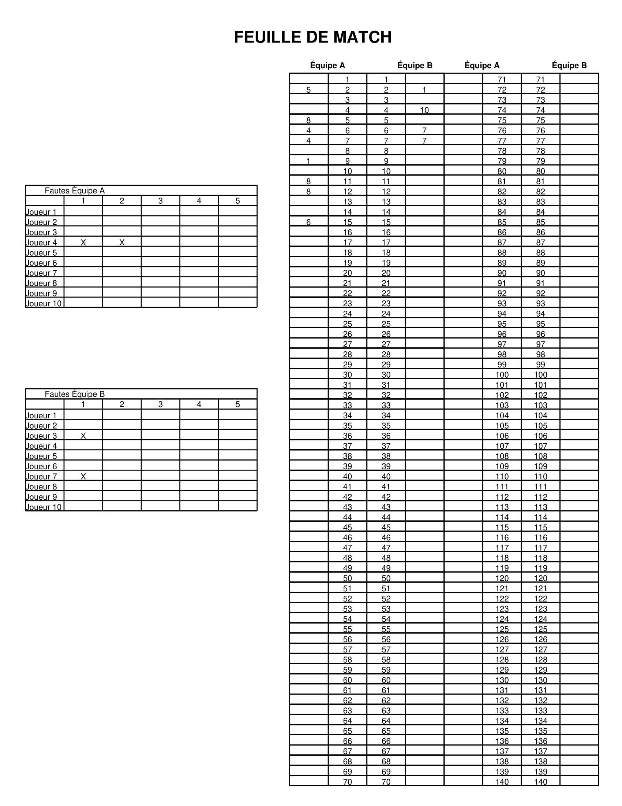

Petit projet sport et Python
- POK
- 2023-2024
- temps 3
- Python
- interface
- statistiques
- Agathe Rabachou
Un POK ayant pour objectif de réaliser en Python une interface qui convertit les données brutes d'un match de basket-ball en statistiques sous différents formats.
Introduction
Ce POK s'inscrit dans le cadre d'un loisir personnel : le basket-ball. Le but est de réaliser une interface qui permette de rentrer un maximum d'informations sur un match que l'on regarderait en temps réel, et de laquelle on pourrait récupérer la feuille de match et toutes les grilles de statistiques à l'issue de la rencontre. A terme, l'outil pourrait être utilisé dans un club amateur à des fins d'optimisation des performances. L'interface devra donc être la plus intuitive possible afin que l'utilisateur puisse suivre le rythme du match, et les documents extraits devront respecter un certain format, condenser les données pertinentes et permettre des comparaisons rapides. Tout ce projet sera réalisé en Python, afin de revoir et de développer mes (faibles) connaissances dans ce langage.
Sprint 1
Objectifs
- Définition exacte et précise du backlog, avec notamment l'ensemble des données en entrée et en sortie de l'interface (1h) ;
- Réflexion autour du design de l'interface et réalisation d'une maquette (1h) ;
- Réalisation de l'interface fonctionnelle en Python (2h) ;
- Amélioration du design de l'interface pour obtenir quelque chose de plus attractif (2h) ;
- Implémentation des premières fonctionnalités avec au minimum la récupération des données de l'utilisateur et la création de la feuille de match (4h).
Réalisations
Dans un premier temps, j'ai établi la liste exhaustive et idéale des fonctionnalités de mon interface. L'interface doit contenir un chronomètre de 4x 10 minutes, que l'utilisateur doit pouvoir arrêter et relancer. L'utilisateur doit pouvoir rentrer au fur et à mesure du match :
- Chaque panier, marqué ou non, avec le nombre de point (ou le type de shoot, c'est équivalent), l'équipe et le joueur concernés ;
- Chaque rebond, avec l'équipe et le joueur concernés ;
- Chaque contre, avec l'équipe et le rebond concernés ;
- Chaque interception, avec l'équipe et le joueur concernés ;
- Chaque passe décisive, avec l'équipe et le joueur concernés ;
- Chaque perte de balle, avec l'équipe et le joueur concernés ;
- Chaque faute, avec le type de faute, l'équipe et le joueur concernés ;
- Chaque changement, avec l'équipe concernée, le joueur entrant, le joueur sortant, et le chrono associé (cela comprend les joueurs du 5 majeur au début du match).
Idéalement, chaque événement rentré dans l'interface doit être lié à un quart-temps (grâce au temps déjà écoulé au chronomètre). L'utilisateur doit également pour revenir en arrière en cas d'erreur, et consulter l'ensemble des événements déjà rentrés. A la fin du match, l'utilisateur doit pouvoir récupérer :
- La feuille de match remplie ;
- La grille de statistique de chaque équipe ;
- L'évaluation individuelle et la grille de statistique de chaque joueur ;
Si le temps me le permet, une suite intéressante au projet pourrait être de conserver toutes les informations de chaque match dans une base de données pour pouvoir faire des comparaisons de performance des équipes et des joueurs entre les matchs ou encore des statistiques moyennes sur une saison complète. Dans ce cas, il faudrait également conserver en mémoire pour chaque match la date, le lieu (domicile ou extérieur) et l'équipe adverse.
Dans un second temps, j'ai imaginé un design pour l'interface, que j'ai maquetté sur Canva. Voici le rendu de la page principale :  La maquette complète avec la page d'accueil et des exemples de fonctionnement est disponible à ce lien.
Ensuite, j'ai commencé le développement. J'ai fait quelques recherche avant de choisir Tkinter comme framework Python pour réaliser l'interface. J'ai eu un peu de mal à le prendre en main, mais je suis finalement arrivée au résultat suivant pour ma page principale :  J'ai alors commencé le développement des fonctionnalités : pour l'instant, une liste déroulante pour choisir le joueur s'affiche lorsque l'on clic sur un événement, et une fois le joueur choisi, un couple ('événement', 'numéro du joueur') s'ajoute à la liste correspondante.
Retours
Pour conclure, l'ensemble du code réalisé est disponible sur ce Github. Faute de temps, ce sprint n'a pas duré les 10h prévues et sera compensé par le suivant. Enfin, les difficultés rencontrées se sont principalement situées sur la prise en main et l'utilisation de Tkinter pour l'interface, que je ne connaissais pas du tout, mais qui s'avère très bien fait une fois maîtrisé.
Organisation du temps
| Durée | Action |
|---|---|
| 30min | Définition exacte du backlog |
| 1h15 | Réalisation de la maquette |
| 30min | Recherches et choix du framework pour l'interface |
| 1h | Lecture de la documentation et prise en main de Tkinter |
| 1h | Réalisation d'une interface fonctionnelle |
| 1h30 | Design de l'interface |
| 1h15 | Écriture des premières fonctions |
Sprint 2
Objectifs
- Designer les autres pages de l'interface (3h)
- Terminer le développements des fonctionnalités principales pour rendre l'application utilisable (3h)
- Faire le lien entre les pages (30min)
- Rendre l'utilisation personnalisable selon les joueurs et les équipes (1h30)
- Créer et formaliser les documents extraits par l'utilisateur (2h)
- En plus selon le temps : implémenter un chronomètre et associer un temps aux événements
Réalisations
Pour commencer, l'ensemble de mon code est toujours disponible à ce lien, je ne l'insérerai donc pas dans ce compte rendu.
Dans ce deuxième sprint, j'ai réalisé toutes les fonctions qui permettent de récupérer les données rentrées par l'utilisateur dans l'interface, de les identifier et de les classer correctement dans différentes listes afin de pouvoir les réutiliser. Pour cela, j'ai crée un menu déroulant avec les différents choix possibles qui apparaît lors de chaque interaction avec l'interface, et j'ai stocké les informations dans un dictionnaire.
Ensuite, je suis passée à la partie qui a été de loin la plus compliquée de ce projet : la création et la mise en page de la feuille de match. Pour cela, j'ai utilisé une partie de la bibliothèque reportlab, qui permet entre autres de générer des fichiers PDF (et que j'ai découverte au passage). J'ai mis beaucoup de temps à la prendre en main, j'ai fait face à de nombreux bugs et il m'a vraiment fallu plusieurs heures pour obtenir un rendu de template convenable. Puis il a fallu remplir ce template à partir d'un dictionnaire de données contenant les points par joueur et par équipe ainsi que les fautes, dans le même format que les dictionnaires remplis grâce aux fonctions et à l'interface dans la partie précédente, le but étant bien sûr par la suite de relier les deux. Cela a encore été une très longue étape et beaucoup de problèmes à régler, mais voici un exemple de résultat avec des données choisies aléatoirement :
Le PDF généré lors de l'utilisation de l'interface est alors téléchargeable (voici d'ailleurs la version PDF).
Pour finir, j'ai commencé à développer les fonctions pour récupérer le reste des données d'un match (hors points et fautes) afin de créer les grilles de statistiques, mais je n'ai pas eu le temps d'aller au bout des réalisations que j'avais prévu.
Retours
Pour conclure ce sprint, j'ai largement sous-estimé le temps passé à corriger des bugs et à créer et mettre en forme un document propre et fonctionnel pour le rendu de la feuille de match. Je n'ai donc pas eu le temps de me pencher sur les autres fonctionnalités de mon backlog, et seule la partie principale, sans les statistiques et la personnalisation des équipes est utilisable. Cependant, j'ai beaucoup appris sur les méthodes de génération de PDF à partir d'un programme ou de données quelconques. Mention honorable également à la documentation officielle de la bibliothèque reportlab ainsi qu'à ChatGPT (parfois utile, parfois moins...) pour les situations débloquées.
Organisation du temps
| Durée | Action |
|---|---|
| 30min | Finalisation du menu déroulant commencé au sprint 1 |
| 3h | Développement des fonctions de récupération, d'identification et de stockage des données de l'interface |
| 3h30 | Création et mise en forme du template vierge de la feuille de match |
| 1h | Remplissage des tableaux des fautes sur la feuille de match à partir d'un dictionnaire de données |
| 2h30 | Remplissage des tableaux des points sur la feuille de match à partir d'un dictionnaire de données |
| 1h30 | Lien entre l'utilisation de l'interface et le remplissage de la feuille de match |